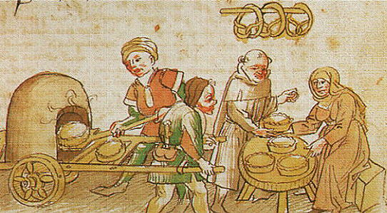
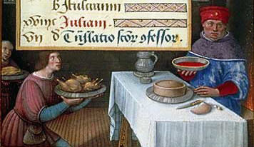
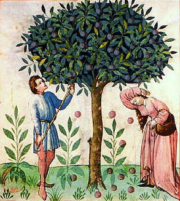

|
|
 SEE ALSO:
Gode Cookery Table of Contents UPDATES: RECIPES & COOKERY: Recipes from A Newe Boke of Olde Cokery Incredible Foods, Solteties, & Entremets Glossary of Medieval Cooking Terms ARTICLES ON COOKERY: Regimen Sanitatis Salernitanum An Elizabethan Dinner Conversation Coqz Heaumez - A Helmeted Cock A Tale of Two Tarts FEASTS & DINNERS: IMAGES: RESOURCES: Gode Cookery Selected Site of the Month Gode Cookery Awards and Site Reviews WEB NAVIGATION: RECIPES MAY BE FOUND IN: Recipes from A Newe Boke of Olde Cokery Incredible Foods, Solteties, & Entremets Coqz Heaumez - A Helmeted Cock A Tale of Two Tarts
© 1997-2009 PLEASE VISIT: The Gode
Cookery Bookshop |

Redactions of two English apple pie recipes and a discussion of how they changed over time. By Monica Gaudio.  Introduction “As American as apple pie” isn’t. What we consider to be apple pie has been around in Europe since the Middle Ages. Medieval and Renaissance recipes for apple pies or tarts have shown up, in one form or another, in English, French, Italian, and German recipe collections that span centuries and which show a wide variety of ways to prepare apple pie. Apples were considered to be a good dessert or finishing food throughout the medieval and Renaissance period as most medieval tastes were largely shaped by dietary beliefs. Since the time of Galen, a second century Greek physician and philosopher whose treaties on the effects of food on human body were revered until the 16th century, it was believed that the body was made up of four humors: blood, choler, phlegm and melancholy and eating certain foods could cause these humors to be out of balance, thereby causing disease. Galen recommended that apples be eaten at the end of the meal because they had the virtue of settling the stomach and preventing other foods from “coming back up” as apples were considered to be cold and moist and would help with digestion and balance of phlegm and melancholic humors. However, while apples remain the focus of apple pie and did not change much from one century to the next, the other ingredients in the pies changed greatly over the years. The change of the apple pie over time was caused by socio-economic reasons; however, the philosophy of medieval eating habits remained the same. To show how the apple pie changed over time, I have redacted two English apple pie recipes. The first one is from the 14th century and found in The Forme of Cury, a 17th century translation of recipes written by Richard II’s master cooks. The second recipe is from the 16th century from A Propre new booke of Cokery (1545), written by Richard Lane and Richarde Bankes. A discussion on methods and why each pie is different follows each redaction.  A
fourteenth century apple pie
A. Redaction From The Forme of Cury: XXVII For to make Tartys in Applis. Tak gode Applys and gode Spycis and Figys and reysons and Perys and wan they are wel ybrayed colourd with Safron wel and do yt in a cofyn and yt forth to bake wel. Modern Redaction: Filling:
Pinch off two thirds of the very warm dough. Reserve the remaining third for the lid, in a bowl with a cloth covering it. We will aim for a six- inch base, with sides approx. 4-5 inches high. Pat the dough into a circle. With knuckles, thumbs, palms, and any other means possible, mold the dough into a bowl shape or cylinder. Splay out the top edges slightly. Roll the remaining dough into a circle. Flatten out into a seven-inch circle. Cut a one-inch circle in the center. If you have any excess dough, use it to decorate the lid or sides with rosettes, leaves, vines, etc. Score the bottoms of these with a fork, and moisten, then attach to a scored section of the lid. When the pie has been filled, moisten the edges of the base. Put the lid on top. Pinch the edges together. Using a small knife or kitchen shears, cut small, inch deep cuts into the edges, making an even number, all around the edge. Fold every other "notch" down, to make a crenellated edge. Pinch the crenellations to ensure they stay down. Mix all of the pie filing ingredients together. Pour into the pie shell and cover with the pie lid. Bake at 350º F for one hour. After one hour, glaze the pie shell with the egg yolk for a lovely golden brown color. Return to the oven for another twenty minutes. B. Discussion The pie shell in this recipe is a coffin. The coffin itself was generally not meant to be eaten, as the taste was very bland and only a container for foodstuffs. As Scully suggests, I slightly modified Lis Herr-Gelatt’s coffin recipe to use whole wheat flour. I also do this because the whole wheat flour I use has high protein and gluten amounts so it will hold together well and keep the pie from spilling. Also, while Scully suggests not using butter, I find butter makes the pie easier to form. A major difference between this pie and subsequent pies is the lack of sugar in the recipe. While sugar was available in Europe in the 14th century, it was extremely scarce in England and the cost was extremely prohibitive, and even King Henry III had trouble obtaining sugar. Instead, the pie is somewhat tart as it relies on the sweetness of the fruit and the spice mixture. Since the spices are not clearly indicated, I use cinnamon, ginger, nutmeg and cloves as my spice mixture as they are my favorite period spices. The amount and types of spices in the pies would have also been different each time the pie was made in period, depending on the cooks’ preferences and the availability of the spices at hand. While there are surviving period apple varieties, I am usually unable to obtain any. Instead, I use Golden Delicious apples that are thought to be a descendant of Golden Reniette, a known period sweet apple variety. I use Bartlett pears that may or may not be a period variety of pear. The raisins and figs that I use are also modern varieties. 
A coffin graces a rich man's table. From Grandes Heures d'Anne de Bretagne, 15th c. lll A
sixteenth century apple pie
A. Redaction From A Propre new booke of Cokery: To make pies of grene apples. Take your apples and pare them cleane and core theim as ye will a Quince then make your coffyne after this maner take a little faire water and halfe a disshe of butter and a little safron and set all this vpon a chafyngdisshe till it be hote then temper your flower with this vpon a chafyngdissh till it be hote then temper your floure with this said licour and the white of two egges and also make your coffyn and ceason your apples with Sinamon ginger and suger inough. Then put them into your coffyn and laie halfe a disshe of butter aboue them and close your coffyn and so bake them. Modern Redaction: Filling:
Mix all of the pie ingredients together, except the butter, and pour into the pie shell. Carefully place the butter on top of the apple mixture. Cover with the lid. Bake at 375º F for one hour. B. Discussion The first noticeable difference between this recipe and the previous one is the pie crust. The saffron gives the crust a nice color and a delicate flavor. This differs from the first recipe as the saffron is in the pie filling, not the crust. This indicated to me that the crust was meant to be eaten and was not just a container. Other recipes from A Propre new booke of Cokery are very similar to this recipe, call for fine-milled flour, and imply that they were consumed because they are “thin and tender.” I used modern “all purpose flour” to mimic finer milled flour. The second major difference between this pie and the pie from the 14th century is the addition of sugar. Sugar became much more available to the English in the 16th century, and other sweeteners, such as honey, were used less and less. I use white cane sugar as it was considered the best during the Elizabethan era and is easily accessible. Again, I use a non-period variety of apples. This time the pie is made with the Granny Smith variety, as they are green and match the name of the recipe. I do not believe the “grene apples” in the title was meant to imply crab apples, as green apples were available in the 16th century, such as the Sops of Wine or Summer Rambo varieties, and crab apples were called “crabbes.” The spices were explicit in this recipe so there was no need for any guesswork.  Gathering Apples. From Tacuinum Sanitatis, Paris, 15th c. Conclusion
The 14th century pie is very different from the 16th century pie, entirely due to the other ingredients. The major force driving change in apple pie seems to be economic factors, such as cost and availability of ingredients. The greater availability of sugar that came about due to an increase in trade and the creation of finer flours completely changed a simple dish known as an apple pie. Bibliography
Burke,
Ray. “The Bee, The Reed, The Root: The History of Sugar”, 1997.
<http://www2.gasou.edu/gsufl/sugar/sugar-b.htm> Flandrin, Jean. “Seasoning, Cooking and Dietetics in the Late Middle Ages” from Food, a Culinary History, New York, 1999. The Forme of Curye, facsimile. Friedman, David and Elizabeth Cook. <http://www.pbm.com/~lindahl/foc/> “Concerning Trees and Their Fruit”, 1988. <http://www.pbm.com/~lindahl/cariadoc/trees.html> Gerard, John. Herball or generall historie of plants, 1594. <http://rainweaver.com/Herbal_Guild/mandrake.html> Herr-Gelatt, Lis, writing as Dame Aoife Finn. "Raising a Coffin or the Fine Art of Making Period Pies." <http://www.florilegium.org/files/FOOD/Period-Pies-art.html> Hieatt, Constance and Butler, Sharon. editors and translators. Curye on Inglysch. England, 1985. Matterer, James. “To make a Char de Crabb”, 1998. <http://www.godecookery.com/goderec/grec77.html> McDaniel, Amanda “Galen.” University of Virginia; 2003. <http://hsc.virginia.edu/hs-library/historical/antiqua/galen.htm> A Propre new booke of Cokery, facsimile. James L. Matterer, trans. <http://www.godecookery.com/trscript/trscript.html> Redon, Odile, Francoise Sabban and Silvano Serventi. The Medieval Kitchen. Trans. Edward Schneider. Chicago, 1998. Rumpolt, Marxen. Ein New Kochbuch, Germany, 1581. Grasse, M, translator. <http://clem.mscd.edu/~grasse/GK_ASappletart.htm> Scully, D. Eleanor. Early French Cookery. Ann Arbor, 1995. Scully, Terence. The Art of Cookery in the Middle Ages. Woodbridge, England. 1995. Scully, Terence, trans. Cuoco Napoletano: The Neapolitan Recipe Collection. Ann Arbor, 2002. Washington Apple Education Foundation, “Golden Delicious” <http://www.bestapples.com/varieties/golden.html> Various Authors. “Stefan’s Florilegium flour-msg” <http://www.florilegium.org/files/FOOD-BREADS/flour-msg.html> A Tale
of Two Tarts is © 2005 by the author Monica Gaudio
Looking for something specific at Gode Cookery?
THE GODE COOKERY RING
Gourmet medieval & Renaissance cookies from Gode
Cookery, perfect
for feasts, weddings, receptions, & more. In dozens of delightful
&
authentic designs.
http://www.godecookery.com/cookies/cookies.html
|


 A Tale
of Two Tarts
A Tale
of Two Tarts
 Gode Cookery
Gode Cookery